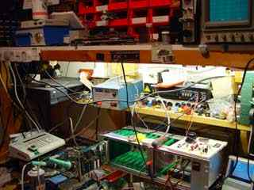

Miscellania. (Odds & ends).
By Lee Davison.

HP-GL Viewer
See what all those *.plt files look like.
Neon heads/tails
The first project I ever finished.
High voltage
Lighting up cold cathode tubes.
LazyPROM
I got fed up waiting for EPROMS to erase.
PanoCAM
An idea for a 360 degree panoramic camera.
SpeedDome camera
Making a PTZ camera pan, tilt and zoom.
CPLD Projects
Making things with programmable logic.
On light
Psuodo random LED sequencer.
VFD PSU
Power supply for vacuum fluorescent displays.
ESR meter
A meter for testing electrolytic capacitors.
KDF 9 Nesting stores
Images from this 1960's machine.
Sampled sound card
Decoding the samples.
RS232
port pinouts. Because I keep forgetting.
Compukit
Bet you thought they just made the UK 101.
Recycling
Sometimes it just has to be done.
Not working?
Sometimes it's not your fault.
To see what's new read the
latest news and updates
Last page update: 7th October, 2008.
e-mail me